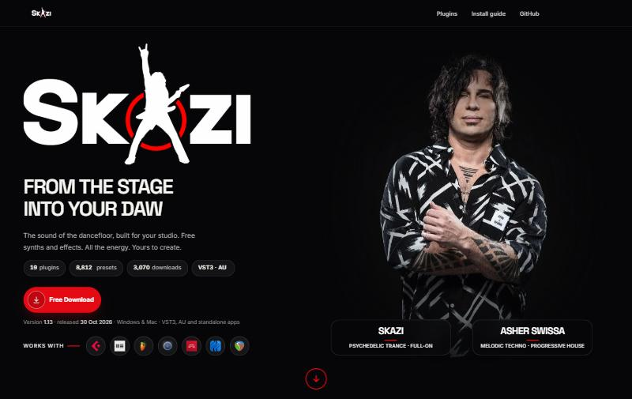
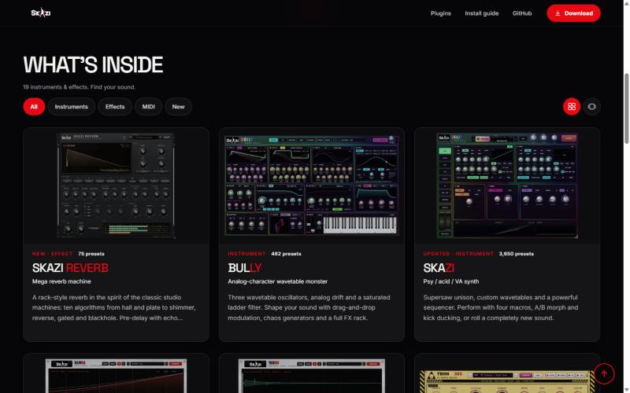
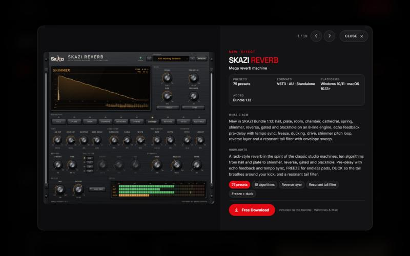
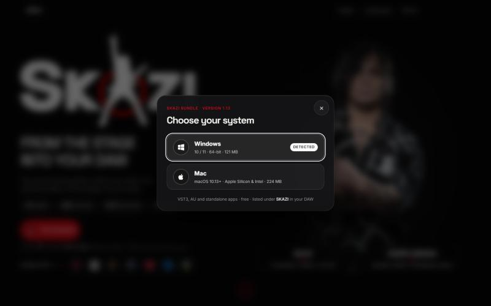
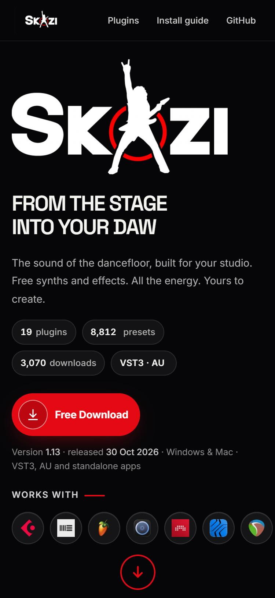

אשר, זה האתר החדש של SKAZI
בניתי לך מחדש את עמוד ההורדה. הכל ב-PR אחד, אתה רק צריך להסתכל ולהחליט.
לפתוח את האתר החדש ולהתרשם ›זו גרסת תצוגה מקדימה, זהה לחלוטין למה שייכנס לאתר שלך. כדאי לפתוח גם מהטלפון.
מה השתנה
- כפתור הורדה אחד. לוחצים, בוחרים Windows או Mac, וההורדה מתחילה. אחרי לחיצה על Windows קופצת הודעה שמסבירה מה לעשות עם האזהרה של Windows.
- הגרסה, התאריך וגודל הקבצים נמשכים אוטומטית מ-GitHub. לא צריך לעדכן אותם ביד.
- 19 הפלאגינים בכרטיסים אחידים, עם סינון (Instruments / Effects / MIDI / New). לחיצה על כרטיס פותחת חלון עם צילום מסך גדול, מה חדש, והכל.
- מספר ההורדות האמיתי מופיע למעלה (3,070 נכון להיום) ומתעדכן לבד.
- התמונה שלך ממוזגת לרקע השחור, בלי מסגרת.
- פתיחה קצרה עם הלוגו פעם אחת בביקור, ואז ישר לדף.





אהבת? ככה מכניסים את זה לאתר שלך (3 לחיצות)
- פותחים את ה-PR: github.com/slazoasher/skazi-bundle/pull/8 (צריך להיות מחובר ל-GitHub עם החשבון שלך, slazoasher).
- גוללים למטה עד הכפתור הירוק Merge pull request ולוחצים עליו.
- לוחצים על הכפתור הירוק השני, Confirm merge.
זהו. תוך כמה דקות האתר slazoasher.github.io/skazi-bundle יתעדכן לבד. אם אתה עדיין רואה את הישן, רענן עם Ctrl+F5 (או Cmd+Shift+R במק).
שום דבר בפלאגינים עצמם, במתקינים או בהורדות לא משתנה. רק עמוד האתר.
רוצה לשנות משהו קודם?
תכתוב לי מה, או תשאיר הערה ב-PR (יש שם תיבת תגובה בתחתית העמוד). אני אעדכן, וה-PR יתעדכן לבד. לא צריך לעשות כלום בינתיים.
לא אהבת?
לא קורה כלום. האתר שלך נשאר כמו שהוא. אפשר פשוט להתעלם מה-PR או ללחוץ על Close pull request בתחתית העמוד שלו.
באהבה, סרגיי